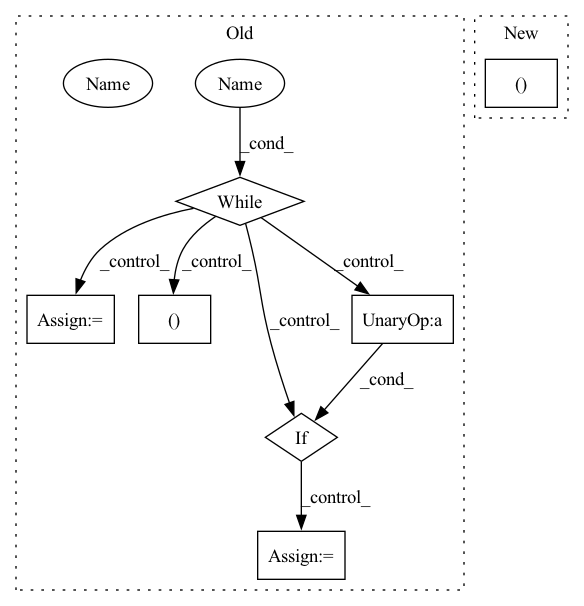

Pattern ID :7955
Before Change
egress_cost = 0.0
overall_best = None
best_plan = {}
while True :
best_costs = dp_best_cost[node]
h, c = None, np.inf
for resources in best_costs:
if best_costs[resources] < c:
h = resources
c = best_costs[resources]
if not isinstance(h, DummyResources) :
message_data.append((node, h))
best_plan[node] = (h, c)
node.best_resources = h
elif overall_best is None:
overall_best = c
if node not in dp_point_backs:
break
egress_cost = dp_point_backs[node][h][2]After Change
// Do not print Source or Sink.
message_data = [
t for t in message_data
if t[0].name not in ("__source__", "__sink__" )
]
message = tabulate.tabulate(reversed(message_data),
headers=["TASK", "BEST_RESOURCE"],In pattern: SUPERPATTERN
Frequency: 3
Non-data size: 7
Instances Fragment ID: 28348976
Project Name: skypilot-org/skypilot
Commit Name: 87c6f76b628db89e65db669ed8375eac2714f1c2
Time: 2021-11-03
Author: concretevitamin@users.noreply.github.com
File Name: prototype/sky/optimizer.py
M Class Name: Optimizer
N Class Name: Optimizer
M Method Name: read_optimized_plan(4)
N Method Name: read_optimized_plan(4)
M Parent Class: object
N Parent Class: object
M File Name: prototype/sky/optimizer.py
N File Name: prototype/sky/optimizer.py
M Start Line: 242
M End Line: 274
N Start Line: 247
N End Line: 284
Before Change
bag_vector = bag_data[:, 3]
bag_ins_list.append([bag_label, bag_vector])
bag_ins_list = shuffle(bag_ins_list)
test_pos = 0
while(test_pos ):
bags_list, test_list = cross_validation_set(bag_ins_list, fold=10, index=1)
pos_c = 0
for fold in test_list:
pos_c = pos_c + fold[0]
print(pos_c)
if pos_c >= 0 and pos_c!= len(test_list):
test_pos = 1
acs = []
num_feats = 166After Change
acs = []
print("Dataset: " + args.datasets)
for k in range(0, args.cv_fold):
print("Start %d-fold cross validation: fold %d " % (args.cv_fold, k ))
bags_list, test_list = cross_validation_set(bag_ins_list, fold=args.cv_fold, index=k)
i_classifier = mil.FCLayer(args.num_feats, 1)
b_classifier = mil.BClassifier(input_size=args.num_feats, output_class=1) Fragment ID: 28348929
Project Name: binli123/dsmil-wsi
Commit Name: 9904a494d25725384a486cb0c262c73de91b327a
Time: 2020-11-19
Author: bli346@wisc.edu
File Name: train_mil.py
M Class Name: AnonimousClass
N Class Name: AnonimousClass
M Method Name: main(0)
N Method Name: main(0)
M Parent Class:
N Parent Class:
M File Name: train_mil.py
N File Name: train_mil.py
M Start Line: 144
M End Line: 177
N Start Line: 114
N End Line: 168
Before Change
bag_vector = bag_data[:, 3]
bag_ins_list.append([bag_label, bag_vector])
bag_ins_list = shuffle(bag_ins_list)
test_pos = 0
while(test_pos ):
bags_list, test_list = cross_validation_set(bag_ins_list, fold=10, index=1)
pos_c = 0
for fold in test_list:
pos_c = pos_c + fold[0]
print(pos_c)
if pos_c >= 0 and pos_c!= len(test_list):
test_pos = 1
acs = []
num_feats = 166After Change
acs = []
print("Dataset: " + args.datasets)
for k in range(0, args.cv_fold):
print("Start %d-fold cross validation: fold %d " % (args.cv_fold, k ))
bags_list, test_list = cross_validation_set(bag_ins_list, fold=args.cv_fold, index=k)
i_classifier = mil.FCLayer(args.num_feats, 1)
b_classifier = mil.BClassifier(input_size=args.num_feats, output_class=1) Fragment ID: 28349060
Project Name: binli123/dsmil-wsi
Commit Name: 9904a494d25725384a486cb0c262c73de91b327a
Time: 2020-11-19
Author: bli346@wisc.edu
File Name: .ipynb_checkpoints/train_mil-checkpoint.py
M Class Name: AnonimousClass
N Class Name: AnonimousClass
M Method Name: main(0)
N Method Name: main(0)
M Parent Class:
N Parent Class:
M File Name: .ipynb_checkpoints/train_mil-checkpoint.py
N File Name: .ipynb_checkpoints/train_mil-checkpoint.py
M Start Line: 144
M End Line: 177
N Start Line: 114
N End Line: 168